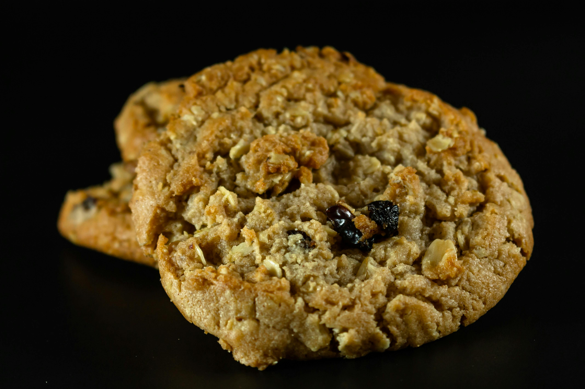

Yulaflı Kurabiye Tarifi

İçindekiler:
- 1 Su Bardağı Yulaf Ezmesi
- 1/2 Su Bardağı Tam Buğday Unu
- 1/4 Su Bardağı Zeytinyağı
- 1 Yumurta
- 1/4 Su Bardağı Bal
- 1 Çay Kaşığı Vanilin
- 1/2 Çay Kaşığı Kabartma Tozu
Yapılışı:
- Fırını 180°C'ye ısıtın.
- Bir kasede tüm malzemeleri karıştırın ve yumuşak bir hamur elde edin.
- Hamurdan ceviz büyüklüğünde parçalar koparıp tepsiye dizin.
- Kurabiyeleri 12-15 dakika pişirin.
Geri Dön

aleynazzzz (5 Ocak 2024 17:41):
Sağlıklı olması lezzetine engel değil çok sevdim
user4444 (2 mart 2024 09:26):
içine ekstra kaju çok yakışır.
nurayyaslı (7 şubat 2024 15:22):
Diyetteyken tatlı krizine birebir.
cemresever (1 Aralık 2022 12:40):
güzel bir tarif!